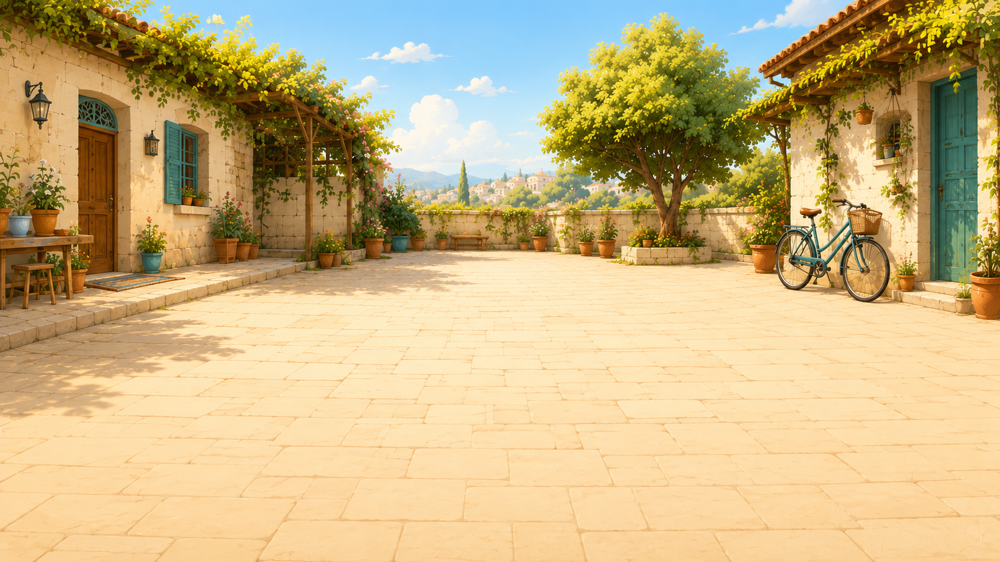
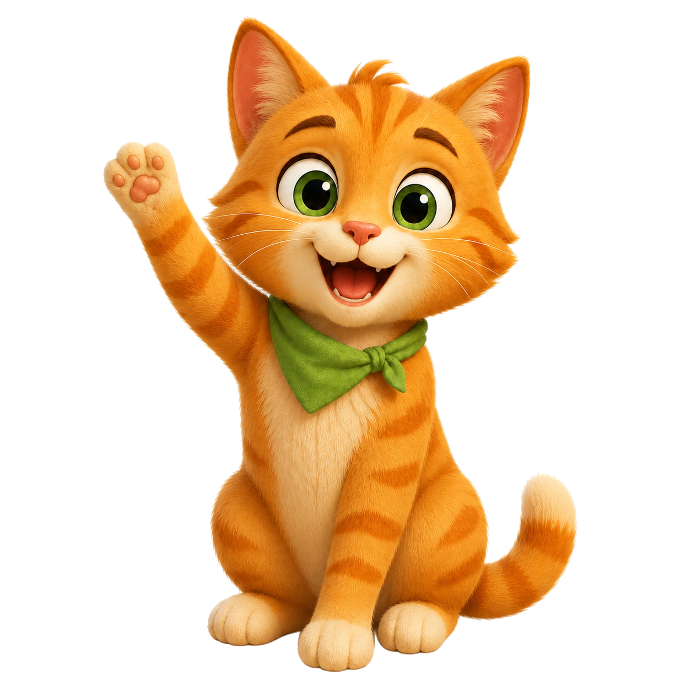

מִישְׁמִישׁمشمش
שָׁלוֹםسلام

שְׂמֵחִים שֶׁבָּאתֶם!
אֲנִי מִישְׁמִישׁ הֶחָתוּל 🐱
נְטַיֵּל יַחַד בַּשְּׁכוּנָה וְנִלְמַד עִבְרִית בְּיַחַד.
בּוֹאוּ נַתְחִיל
מַתְחִילִים בְּטִיּוּל הַכָּרוּת · פַּנָּס